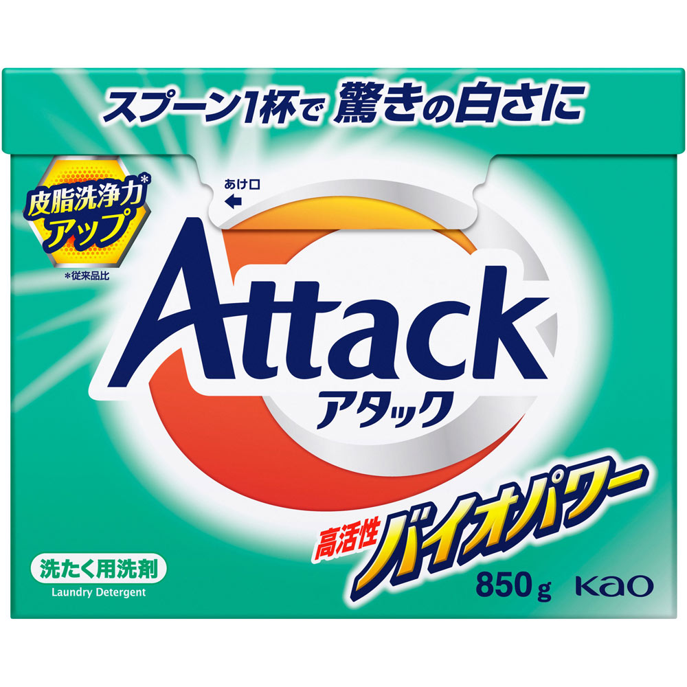
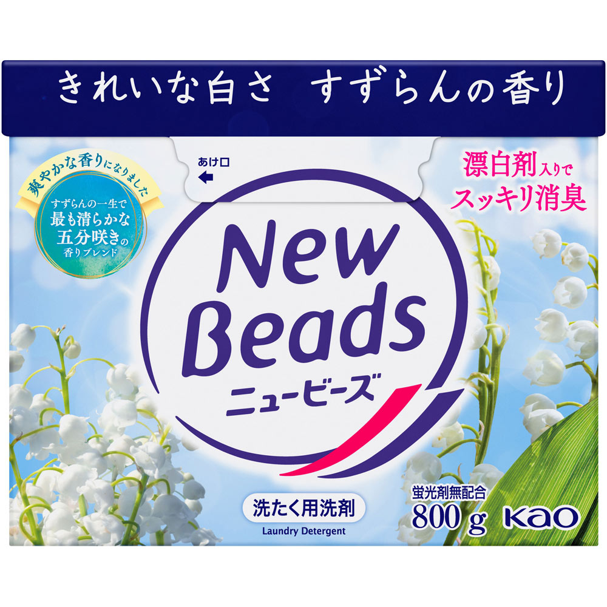
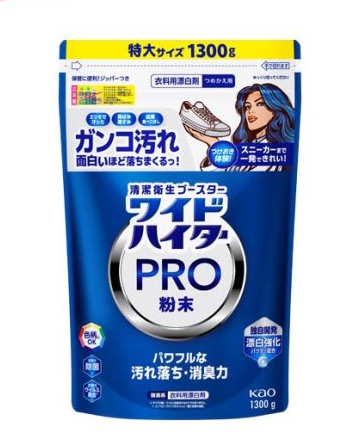
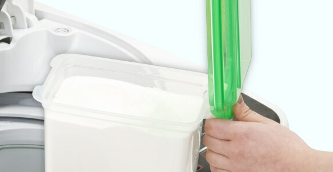
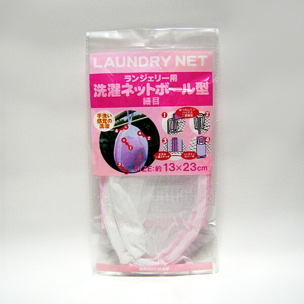
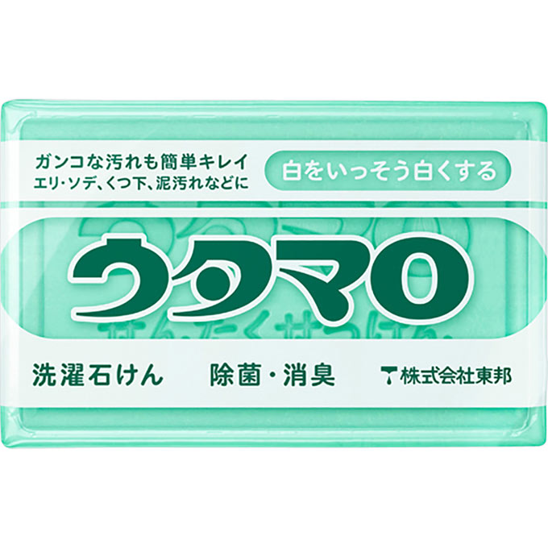
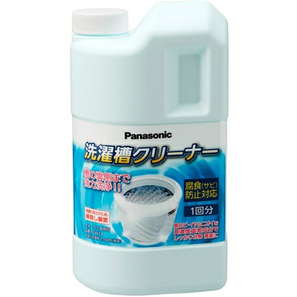
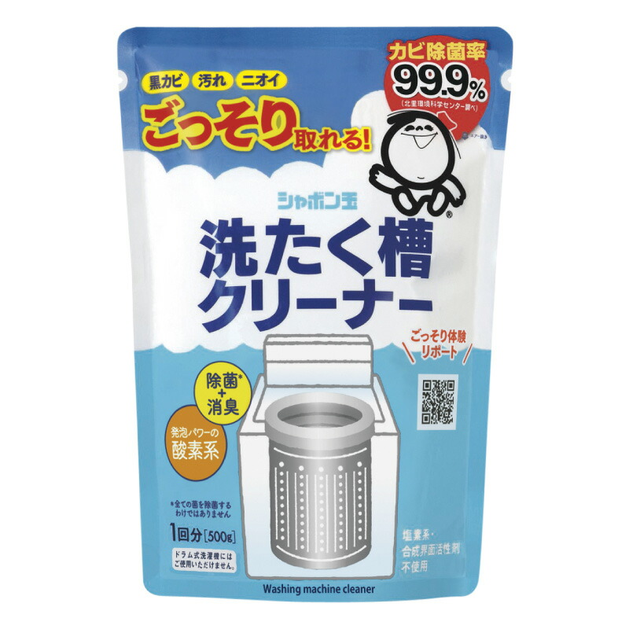
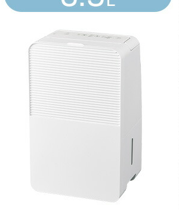
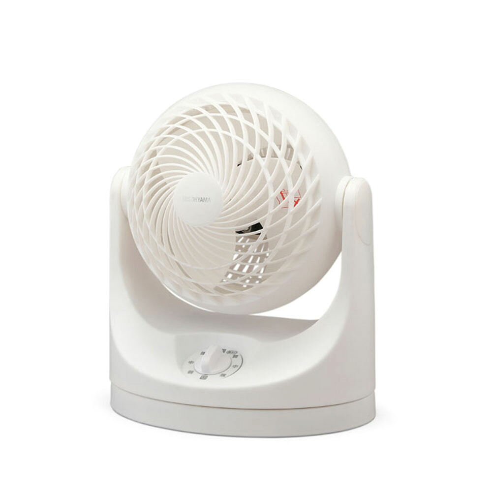

1位

花王
アタック高活性バイオパワー 850g
850g
¥493税込・2026年9月19日に楽天で確認
よく挙がっていた声
- 粉に戻してから、タオルのにおいが気にならなくなったという声がいちばん多かった品
- 冬は先にお湯で溶かしてから入れている人が多い
気になる声香りは控えめ。柔軟剤の香りを生かしたい人はこちら
販売価格・容量・送料はリンク先でご確認ください
家事・掃除・洗濯 / 2026.09.20
YouTubeの動画で紹介した10品です。タオルのにおい・溶け残り・部屋干しの困りごとへの答えから選びました。上の5つは、ショート動画で挙げた順です。
10 ITEMS 動画で紹介したもの
価格は2026年9月19日に楽天の商品ページで確認したものです。価格や在庫は変わることがあります。
漂白剤・洗濯槽クリーナーは、使い方と注意書きを読んでから使ってください。
声は、掲示板や商品ページで多かった内容をまとめ直したものです。原文の引用ではありません。

花王
850g
¥493税込・2026年9月19日に楽天で確認
よく挙がっていた声
気になる声香りは控えめ。柔軟剤の香りを生かしたい人はこちら
販売価格・容量・送料はリンク先でご確認ください

花王
800g
¥438税込・2026年9月19日に楽天で確認
よく挙がっていた声
気になる声大きいサイズだと置き場所を決めておかないとこぼしやすい
販売価格・容量・送料はリンク先でご確認ください

花王
1300g
¥1,732税込・2026年9月19日に楽天で確認
よく挙がっていた声
気になる声つめかえ用なので、入れ物は別に用意する
販売価格・容量・送料はリンク先でご確認ください

袋ごと入る粉末洗剤ケース
1.6L
¥780税込・2026年9月19日に楽天で確認
よく挙がっていた声
気になる声スプーンは付いていないので、今使っているものを移す
販売価格・容量・送料はリンク先でご確認ください

ランジェリー用洗濯ネット
細目・13×23cm
¥110税込・2026年9月19日に楽天で確認
よく挙がっていた声
気になる声ボール型は洗濯機の中で見失いにくい
販売価格・容量・送料はリンク先でご確認ください

東邦ウタマロ石けん
133g
¥154税込・2026年9月19日に楽天で確認
よく挙がっていた声
気になる声置き場所が濡れたままだと減りが早い
販売価格・容量・送料はリンク先でご確認ください

パナソニック洗濯槽クリーナー
—
¥1,740税込・2026年9月19日に楽天で確認
よく挙がっていた声
気になる声月に一度と決めている人が多い
販売価格・容量・送料はリンク先でご確認ください

シャボン玉石けん洗たく槽クリーナー
500g
¥550税込・2026年9月19日に楽天で確認
よく挙がっていた声
気になる声汚れが浮くので、すくう網があると楽という声
販売価格・容量・送料はリンク先でご確認ください

アイリスオーヤマ衣類乾燥除湿機
コンプレッサー式
¥18,800税込・2026年9月19日に楽天で確認
よく挙がっていた声
気になる声電気の使用量は製品ごとに違うので表示を確認する
販売価格・容量・送料はリンク先でご確認ください

アイリスオーヤマサーキュレーター
8畳
¥3,080税込・2026年9月19日に楽天で確認
よく挙がっていた声
気になる声エアコンと一緒に使う人が多い
販売価格・容量・送料はリンク先でご確認ください
SOURCE & NOTES
2026年9月19日に確認した価格と、よく挙がっていた声です。